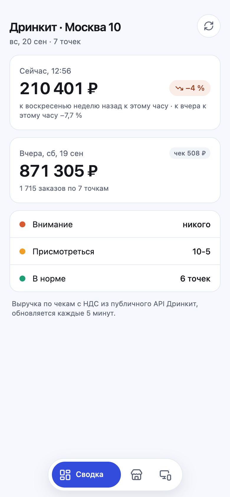
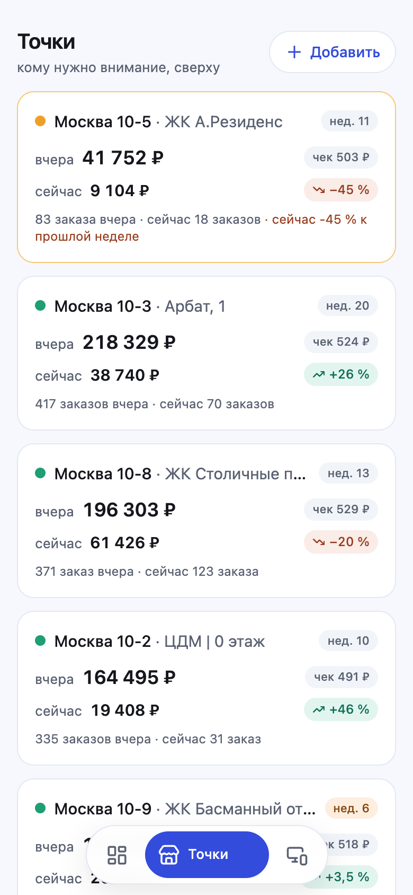
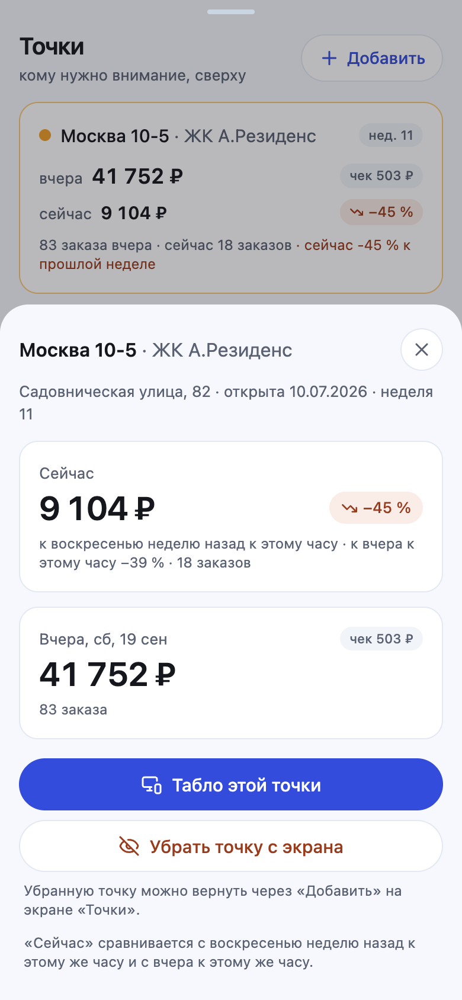
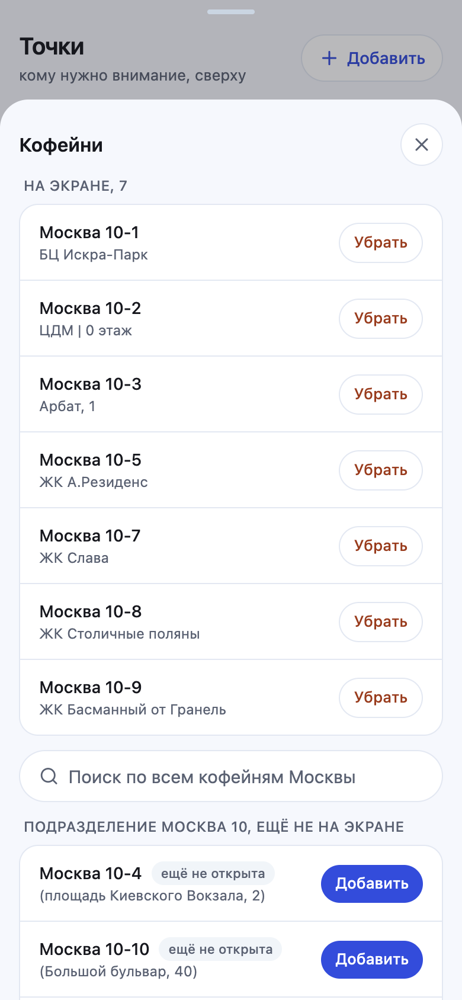
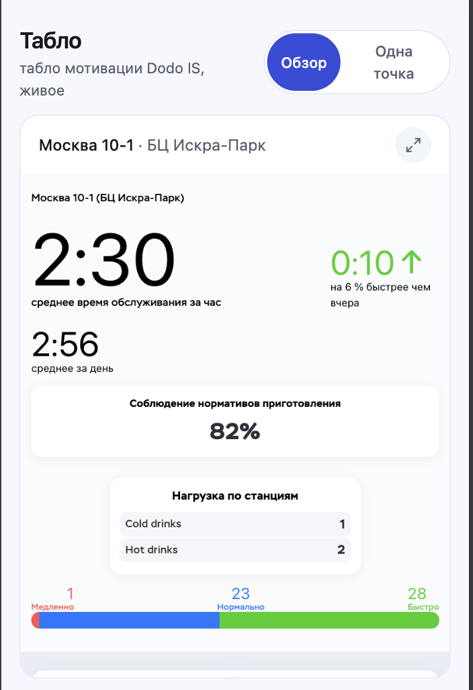
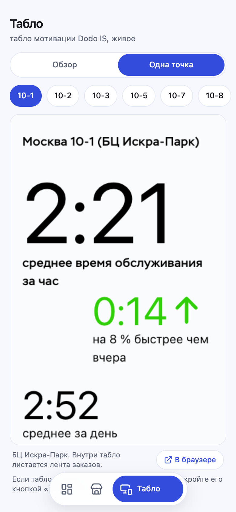

Выручка ваших кофеен, кому нужно внимание и табло мотивации. На одном экране телефона, без входа и без сервера.
Как открыть приложение на телефоне, что показывает каждый экран, как читать проценты и сигналы, откуда берутся данные и что можно добавить дальше.
Всё ли в порядке сейчас, какая точка требует внимания и сколько сделали вчера.
«Сейчас» сравнивается с тем же днём недели неделю назад к этому же часу, а не с целым вчерашним днём.
Официальное табло мотивации Dodo IS по каждой точке, без переключения между 250 кофейнями сети.
Открытые данные Dodo, статический сайт, ночной сборщик истории на GitHub. Паролей и серверов нет.
Приложение сделано под три сценария владельца сети: понять за 10 секунд, что всё в порядке; найти точку, которой нужно внимание; следить за молодыми точками.
Сумма по всем точкам сейчас и вчера, статусы «внимание», «присмотреться», «в норме».
Карточки кофеен, отсортированные по срочности. Тап открывает подробности.
Табло мотивации Dodo IS по каждой точке: обзор всех и полный экран одной.
Первый экран при запуске. Отвечает на вопрос «всё ли в порядке» одним взглядом.

↗ +12 % зелёный: сегодня к этому часу идём лучше, чем в тот же день недели неделю назад.
↘ −14 % красный: хуже.
−3 % серый без стрелки: в базе меньше 20 заказов или точка открылась меньше двух недель назад, процент ненадёжен.
Сверху появится жёлтая плашка с причиной: нет соединения, сайт Dodo не отвечает или отвечает страницей проверки. Приложение повторяет запрос само через 3, 8, 20 и 45 секунд. Кнопка «Проверить API» открывает адрес источника данных в Safari: если там текст с цифрами в фигурных скобках, источник доступен. Чаще всего причина такой плашки это включённый VPN (раздел 9).
Список ваших кофеен. Сверху те, кому нужно внимание, дальше по выручке за вчера.

Кнопка «Добавить» открывает окно управления кофейнями (раздел 6). Тап по карточке открывает подробности (раздел 5).
| Сигнал | Когда срабатывает | Цвет |
|---|---|---|
| Точка не торгует | Прошло больше 60 минут после открытия по графику, а выручка сегодня ноль | внимание |
| Провал сейчас | Сегодня к этому часу на 25 % и больше ниже того же дня недели неделю назад, прошло не меньше 3 часов с открытия, в базе не меньше 15 заказов | присмотреться |
| Молодая точка | Для точек младше 8 недель сигнал «провал» показывается только при двух неделях снижения подряд: у новых точек колебания это норма | присмотреться |
| Нет данных | Источник не ответил по этой точке | серый |
Пороги заданы в настройках приложения и меняются одной правкой: 25 %, 60 минут, 15 и 20 заказов, 8 недель.

Управление набором точек на экране. Всё хранится на телефоне, менять можно в любой момент.
Окно открывается кнопкой «Добавить» на экране «Точки».

Официальное табло мотивации Dodo IS по каждой вашей точке. Данные табло принадлежат Dodo и показываются как есть.


Публичный API Дринкит publicapi.drinkit.dodois.io. Это тот же источник, из которого Dodo Brands публикует продажи сети на своём сайте для инвесторов. Телефон обращается к нему напрямую, посредников нет.
Сумма по чекам с НДС. Проверено 20 сентября 2026: сумма по всем 300 точкам сети совпала с сетевым итогом Dodo до рубля, а определение совпадает с официальным «system sales» из отчётов Dodo Brands: продажи клиентам, включая НДС. Если в Dodo IS вы смотрите отчёт без НДС, цифры там будут ниже на долю налога, это не расхождение.
API отдаёт по каждой точке: сегодня, вчера, тот же день недели неделю назад, и всё это ещё и «к текущему часу». У кофейни недельный ритм: суббота не похожа на понедельник. Поэтому главное сравнение в приложении: сегодня к этому часу против того же дня недели неделю назад к этому же часу. Второе, вспомогательное: к вчера к этому часу.
| Что на экране | С чем сравнивается |
|---|---|
| Сейчас, процент в бейдже | Тот же день недели неделю назад, накопительно к этому же часу |
| Сейчас, подпись под цифрой | Вчера, накопительно к этому же часу |
| Вчера | Не сравнивается, показывается абсолютом с заказами и чеком |
| Ситуация | Причина | Что делать |
|---|---|---|
| Жёлтая плашка «нет данных», табло пустые | Включён VPN: защита сайта Dodo не пропускает адреса VPN-серверов | Отключить VPN или исключить из него Safari и домен dodois.io, затем «Обновить» |
| Данные появились не сразу после запуска | Сеть телефона просыпается позже приложения | Ничего: приложение повторит запрос через несколько секунд само |
| Табло пустое 10–20 секунд | Проверка браузера сайтом Dodo | Подождать; дольше минуты: кнопка «В браузере» |
| У точки «откроется в 10:00» вместо процента | Точка ещё не открылась по графику работы | Ничего, процент появится через час после открытия |
| Серый процент без стрелки | Мало заказов в базе сравнения или точке меньше двух недель | Ничего, это защита от случайных «+400 %» утром |
| Цифры не совпадают с отчётом Dodo IS | В приложении выручка с НДС, в отчёте может быть без | Сверять с отчётом «с НДС»; если разница не объясняется налогом, сообщить |
| Новая точка не появилась сама | Добавление по кнопке, по решению владельца | «Точки» → «Добавить» → раздел подразделения «Москва 10» |
Идеи из исследования источников Dodo, разложены по тому, что для них нужно. Ничего из этого не требует переделывать текущее приложение.
Кривые средней дневной выручки по неделям с открытия для молодых точек, график 14/28 дней и недели в карточке. Включаются, когда сборщик накопит 4–6 недель, ориентир середина октября.
Сборщик раз в 10 минут кладёт снимок цифр в репозиторий, приложение берёт его, когда сайт Dodo недоступен. Задержка до 15 минут, работает с любым VPN. Табло это не спасёт.
Публичный API отдаёт топ продуктов точки по числу заказов за период с картинками. Можно показать «что пьют сегодня» в карточке точки.
Сетевые итоги Дринкит доступны открыто: можно показывать, растёт ли ваша точка быстрее сети, и долю ваших точек в сети.
Сборщик уже видит все точки подразделения. Новые могут появляться на экране сами в день открытия, если владелец захочет.
Раскладка для планшета или телевизора в офисе: сводка слева, табло справа. Отложено по решению владельца.
В 9:00 одно сообщение: вчера по каждой точке, итог и кто требует внимания. Часто полезнее дашборда, потому что не надо ничего открывать.
«Точка не открыла продажи через час после открытия», «выручка ниже порога», «время обслуживания выше нормы» в Telegram владельцу или управляющему.
Требует учётную запись владельца в Dodo IS с ролью администратора подразделения, приложение в кабинете разработчика Dodo и небольшой бэкенд для хранения токена и истории. Оценка 2–3 недели.
Дневные и месячные продажи по заведениям из раздела «Финансы» Dodo IS API. Сразу заполняет графики, «Разгон» и сравнение месяц к месяцу, не дожидаясь сборщика.
Dodo отдаёт готовый like-for-like по выручке и заказам по дням, неделям и месяцам. Это тот самый процент, которым оперирует сама сеть.
Средняя оценка заказов за период (для Дринкит шкала от 0 до 1) и последние отзывы по каждой точке.
Цели на месяц по каждой точке уже есть в Dodo IS. Можно показывать выполнение плана и прогноз до конца месяца.
Разбивка продаж: зал, с собой, приложение, агрегаторы, способы оплаты. Отмены заказов.
Вход через Dodo IS, точки по ролям пользователя, партнёру только просмотр. Нужно, если данные перестанут быть открытыми.